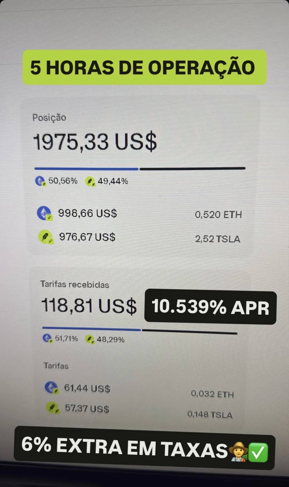
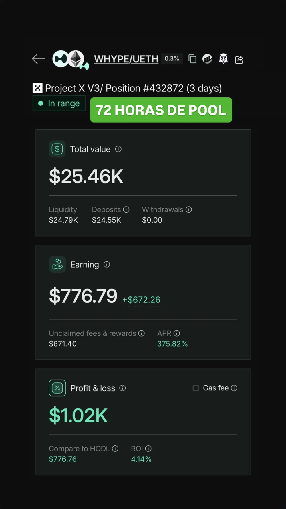
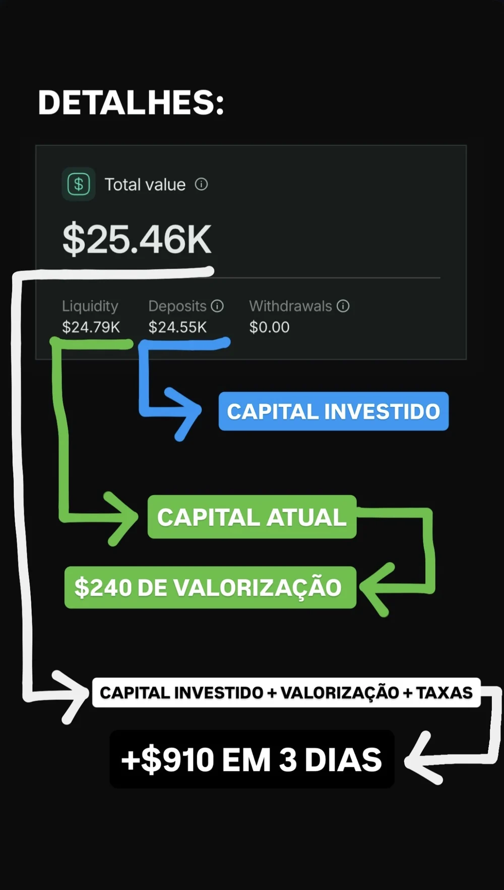
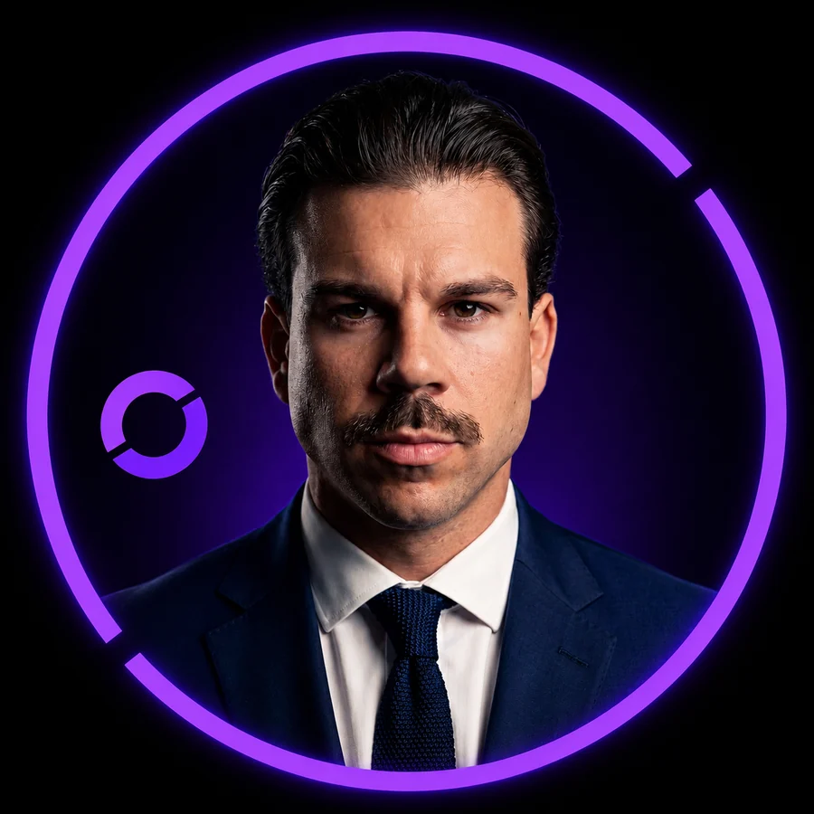

Aprende um método simples para identificar os grandes fundos do Bitcoin através de confirmações objetivas — sem emoção, sem palpites, sem depender da opinião de ninguém.
Quero Aprender o Método ESPERENão precisas de perceber de gráficos. Precisas de um processo para seguir.
Não é o mercado que te trava. É a dúvida que aparece sempre no mesmo momento: “Será que está bom para comprar?”
Vês o preço a subir, sentes que vais ficar de fora e entras sem qualquer critério. A decisão foi da emoção, não tua.
Ficas à espera de mais um bocadinho. Depois de mais um bocadinho. E quando olhas, já subiu sem ti.
Cada canal diz uma coisa diferente. Quanto mais conteúdo consomes, menos claro fica o que fazer a seguir.
O problema nunca foi o Bitcoin.O problema sempre foi investir sem um plano.
Sem ansiedade. Sem procurar uma segunda opinião. Sem aquela sensação de que estás sempre a decidir no escuro.
A diferença entre os dois lados não é sorte nem talento. É ter um processo escrito e cumpri-lo.
Tudo dentro da área de membros, disponível a partir do momento em que concluis a compra. A confirmarPrazo de acesso: vitalício ou limitado?
Ninguém sabe onde está o fundo exato. Mas o mercado deixa sinais — e esses sinais podem ser verificados, um a um, antes de tomares qualquer decisão.
Não é passividade. É recusar entrar enquanto as condições não estiverem reunidas.
Ler o que o gráfico está a dizer com um conjunto reduzido de referências — sem ruído, sem notícias, sem opiniões.
Cruzar os sinais entre si. Um sinal isolado não chega; a confirmação é o que separa decisão de palpite.
Agir conforme o plano que definiste antes, e não conforme o que sentes no momento.
Entra, vê o método completo, lê os manuais e testa a checklist.
Se nos primeiros 7 dias sentires que isto não é para ti, escreves-me e devolvo o valor integral. Sem justificações e sem perguntas.
Não quero o teu dinheiro se o método não te der clareza.
Quero testar sem riscoÉ o mesmo processo em cada ciclo. Repetível, verificável e teu.
Sabes o que observar e ignoras o resto.
Nada avança com um sinal só.
A checklist responde por ti.
O que ficou escrito antes vale mais do que o que sentes agora.
Cada indicador é explicado em linguagem simples, com exemplos práticos. Se sabes abrir um gráfico, sabes aplicar isto.
A referência que assinala as zonas em que o Bitcoin historicamente esgotou a queda do ciclo.
Um canal de cor que mostra quando o mercado deixa de arrefecer e muda de fase.
Um conjunto de médias que revela, de relance, a direção da tendência de fundo.
O cruzamento de médias mais falado do mercado, e o que ele significa mesmo quando aparece.
Como reconhecer o medo e o FOMO no momento em que aparecem, e por que razão a checklist decide melhor do que tu nesse instante.
Como escrever, antes de investir, o que vais fazer em cada cenário — e como cumprir o que escreveste.
Queres investir em Bitcoin, mas nunca sabes qual é o momento certo para comprar.
Já compraste por impulso — e ainda te lembras do que isso custou.
Estás farto de depender da opinião de influenciadores que se contradizem entre si.
Procuras um método simples, que consigas aplicar sem passar anos a estudar análise gráfica.
Queres construir património a longo prazo com decisões pensadas, e não com sorte.
Este método trabalha em ciclos, não em semanas.
Aqui aprendes a decidir sozinho — ninguém te vai dizer o que comprar hoje.
O método não prevê nada; confirma o que já está a acontecer.
Se leste isto e continuas interessado, então estamos a falar a mesma língua.
Em vez de tentar acertar no futuro, verifica o que o mercado já mostrou.
Cada entrada nasce de critérios definidos antes, não do que sentes no momento.
Os indicadores são ferramentas. O que fica contigo é o processo de decisão.
O objetivo nunca foi acertar no fundo exato. Foi parar de investir ao acaso.
E como os mercados mudam, o método acompanha: sempre que houver uma melhoria relevante, ela chega-te sem custo adicional.
O método não nasceu de uma opinião. Nasceu da observação do comportamento do Bitcoin em ciclos anteriores.



Estes são registos históricos do comportamento do mercado. Rendibilidade passada não garante resultados futuros.
O processo completo para deixares de perguntar “será que está bom para comprar?” e passares a investir com um plano.
Acesso imediato após a confirmação do pagamento. Pagamento processado pela Hotmart. Garantia de 7 dias A confirmarVer secção 12.
Da próxima vez que abrires o gráfico, não vais perguntar a ninguém o que fazer. Vais abrir a tua checklist.

Está no mercado de criptomoedas há 6 anos. É consultor DeFi e gestor de pools de liquidez, e acompanha investidores em mentorias personalizadas.
O Método ESPERE nasceu da parte do trabalho que se repete em todas as reuniões: a mesma pergunta, feita de formas diferentes, sobre quando é a altura certa de comprar. Este método é a resposta escrita, para que deixes de precisar de a fazer.
A confirmarUsar foto do Daniel neste bloco de autoridade? Há fotos na pasta do Drive, mas nenhuma foi indicada para esta secção.